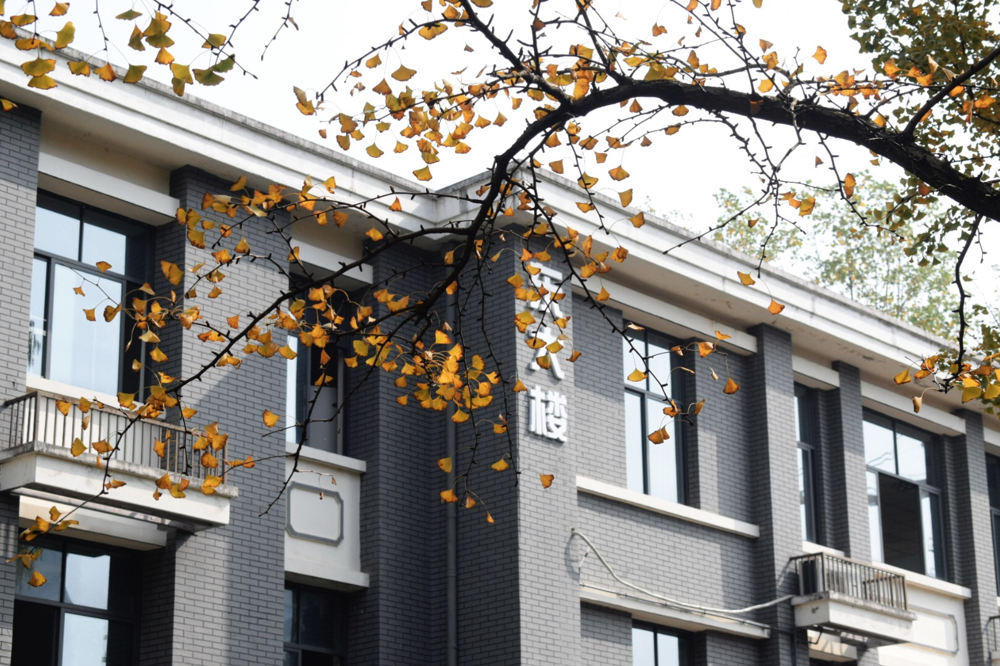

我的农林大一年回顾
在浙江农林大学的第一年，我经历了从高中生到大学生的华丽蜕变。初入校园时，被美丽的校园环境所震撼——翠绿的草坪、高大的树木和现代化的教学楼相得益彰。我加入了学生会宣传部，学会了团队协作和活动策划，在新生晚会中负责海报设计，收获了宝贵的经验。

学习方面，我逐渐适应了大学自主学习的模式。高等数学和Java成为最具挑战性的课程，但也让我建立了扎实的专业基础。在图书馆度过的无数个夜晚，不仅提高了我的学术能力，更培养了我独立思考和时间管理的能力。特别感谢我的导师和同学们，他们的帮助让我的大一生活更加充实。